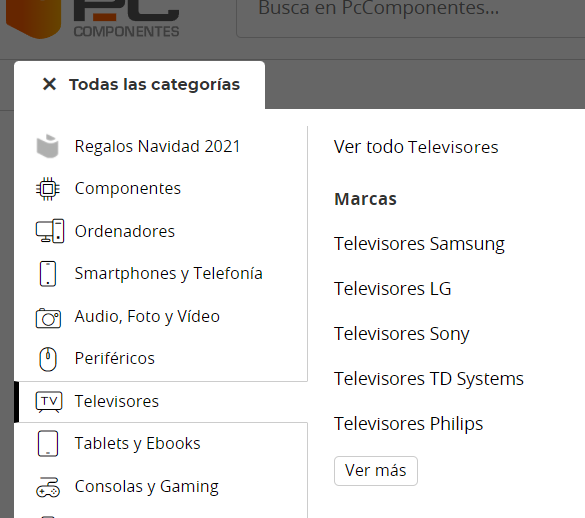
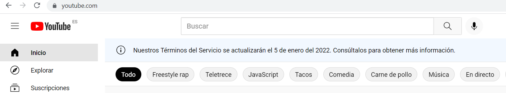

7 EXPERIENCIA DE USUARIO.
La usabilidad de una interfaz es el atributo que mide la facilidad de uso de la misma. Es uno de los elementos más importantes que tenemos que tener en cuenta a la hora de crear un sitio web. Ya que el sitio puede estar bien programado o tener una idea muy buena, pero si no la sabes transmitir bien, el usuario no es capaz de saber cómo funciona el sitio y lo más probable es que se vaya.
UX: User Experience
El User Experience trata de que la aplicación tiene que ser efectiva tanto por el lado del cliente cómo por quién la ha desarrollado. Es decir que todo el mundo debe de poder usar nuestra web. Este campo, se está convirtiendo cada vez más importante, hasta el punto de que ya existe un perfil de experto en UX.
A la hora de crear una interfaz web debemos de:
- Conocer cuál es el usuario objetivo.
- Analizar el comportamiento/uso que hará el usuario.
- Ponerse en el lugar del usuario (empatizando haciéndose preguntas cómo: ¿Qué es esto? ¿Qué hay para mí aquí? ¿Qué tengo que hacer para conseguirlo?).
Elementos de la experiencia del usuario.
La UX es mucho más que usabilidad y abarca al menos varias áreas principales:
- Psicología:
El diseñador debe de olvidarse de y ponerse a la piel de los usuarios que van a usar esa aplicación. Un consejo para ayudarse, sería hacerse preguntas y comprobar que se encuentre la respuesta en la página.
- Usabilidad:
Debemos de cuidar cada detalle, para que el usuario pueda realizar la acción que deseemos, de la forma más fácil y rápida posible (evitando que le aparezcan errores al usuario).
- Diseño:
No simplemente consiste en hacer un diseño bonito, sino que también debe transmitir confianza y representar bien la marca.
- Análisis:
El Análisis es uno de los aspectos más importantes, aquí debemos de analizar cómo interactúan los usuarios en nuestra web, donde hacen más clics…
Existen muchas herramientas externas, que nos van a facilitar el análisis (veremos las herramientas más adelante).
- Copywriting:
Esta sección, es la que menos se suele tener en cuenta, pero en cambio es de las más importantes, ya que de nada sirve tener un diseño amigable, atractivo, usable...si luego los textos no son coherentes / no explican de forma clara lo que se quiere transmitir.
El proceso de la UX:
La experiencia del usuario, es un proceso de diseño que se está constantemente actualizando… Nuestras webs, van a estar abiertas a todo el mundo, es por eso que debemos de escuchar el feedback de los usuarios y de la competencia, para mantener un sitio actualizado y moderno.
Por lo tanto, todos los pasos que voy a nombrar a continuación, debemos de repetirlos con frecuencia.
- Requerimientos:
Cualquier creación de un sitio web, debe de seguir unos requerimientos. Es por eso, que como mínimo, debemos de:
- Hablar con todos los miembros que están implicados en el desarrollo.
- Aceptar solo algunas sugerencias (las más relevantes) .
- Establecer una barrera para el trabajo del diseñador, no se convierta en una víctima de incompetentes, caprichosos o gente que pone pegas.
- Una primera versión:
Antes de saber si la aplicación funciona o no, debemos de hacer pruebas con una primera versión. Esta versión debe de:
- Cumplir los requisitos.
- Estudiar los tipos de usuarios.
- Cumplir los principios de usabilidad.
- Observar nuestra propia experiencia.
Es recomendable, primero realizar una versión para el móvil (Mobile First), ya que está comprobado que la mayoría de usuario, visitará nuestra aplicación con el móvil.
Arquitectura de la información.
En este paso, debemos de ver cómo organizamos la información. Este punto, depende mucho del tamaño de web que queramos hacer. Es por eso, que se recomienda empezar creando un sitemap.
Un sitemap, es una página del sitio donde se muestra toda la información (páginas del sitio web) estructuradas jerárquicamente.
Tipos de arquitecturas
Obviamente, no todas las aplicaciones son del mismo tipo, y eso influye en la arquitectura resultante. Algunos tipos comunes de arquitecturas giran en torno a:
- Categorias:
Se clasifican los contenidos por grupos. Esta arquitectura es muy usada en los comercios electrónicos.
- Búsquedas:
Organizamos la información en un buscador. Esta arquitectura es muy usada en aplicaciones de contenido masivo.
- Gente:
Organizamos la información en torno a las personas. Esta arquitectura es muy usada en aplicaciones de redes sociales.
-Funciones:
El contenido se distribuye en funciones. Un ejemplo sería un botón de hacer una transferencia en un banco.
- Combinaciones:
Consiste en mezclar más de una arquitectura en una aplicación. Por ejemplo tener la aplicación organizada por categorías y con un buscador para buscar los productos.